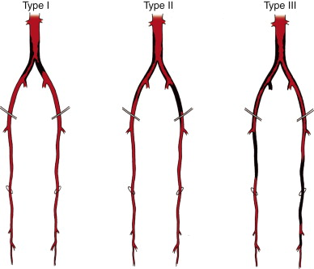
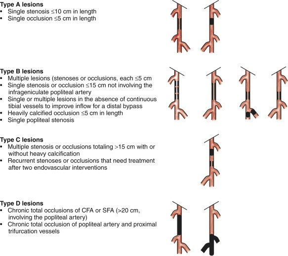
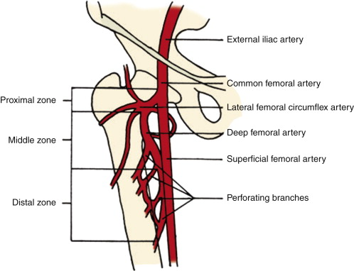
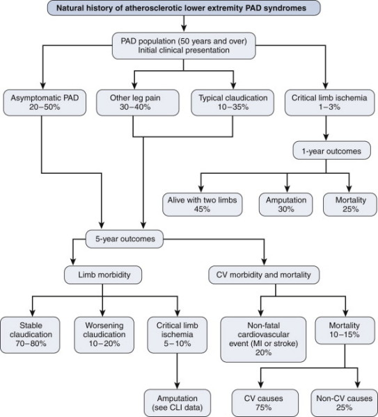

Vascular Ischaemia / Vessel Diseases
Upper Extremity Disease
Claudication and disability much less common partly due to less use
of arm in routine ongoing excercise cf walking.
Causes include: vasospastic, intrinsic arterial disease,
inflammatory disease (e.g. takayasu's), non-inflammatory medical
diseases (e.g. VTE), embolism, trauma.
Evaluation
- Full history and physical evaluating for ischaemic features, signs
of insufficiency, noting all pulses, Allen's test, Dopplers, BP
comparisons.
- CTA better than invasive angiography, fast, safe and accessible.
- MRA has better resolution for small vessels but access and imaging
time limiting; doesn't show calcification like CTA does.
Therapy
- Avoid smoking, manage other risks for atheroma
- Other treatments targeted at cause as appropriate.
- Angiography with endovascular management follows for treatable
atheromatous lesions.
--> best indicated for short segment stenoses / occlusions,
except poor results in vasculitis.
--> options include balloon angioplasty, embolization of
pseudoaneurysms, bare metal and covered stents, thrombolysis for
acute lesions.
--> thromboembolectomy when urgent severe acute ischaemia;
thrombolysis preferable otherwise and especially good for small
arteries of forearm.
Endovascular Technique
- Can access proximal subclavian from femoral or same arm; usually
via brachial cutdown
- Balloon angioplasty for stenotic segments
- Then stent if residual stenoses of 30% or more.
- Catheter-directed thrombolysis useful for acute thrombosis; us.
via femoral,
--> pulsed-spray thrombolysis using tissue plasminogen activator
(tPA), 2mg over 20min; infusion if peristent thrombosis.
--> f/up angioplasty may be needed for clot lysis or residual
artery stenosis.
- If severe ischaemia from acute VTE, surgical balloon embolectomy
may restore perfusion more rapidly than thrombolysis
--> if was >6h occlusion, can get compartment syndrome and
require fasciotomy of forearm and hand.
See vascular access
Aorto-Iliac Occlusive Disease
Classification
3 types

Type 1: single level disease; confined to aorta and iliac arteries
- more common in young smokers and females
- usually presents with calf claudication
Type 2: single level; similar but more extensive abdominal disease;
femorals
- also get buttock claudication, impotence and diminished or absent
femoral pulses.
Type 3: multi-level disease
- spectrum from claudication to rest pain and tissue loss
Clinical / Ix
Thorough hx and exam; risk factors
Have absent or diminished femoral pulses.
Features of diminished peripheral perfusion
- coolness, pallor, dependent rubor, loss of pretibial skin turgor
and hair
ABI, doppler, pulse-volume recordings, exercise testing
Then delineate with duplex USS, CTA, MRA
USS - functional; doppler; define site, distance and severity of
stenoses
- then CTA to clearly show anatomy
- MRA if contrast allergy or renal disease.
Treatments
First, good medical control with cardiovasc risk fx interventions,
exercise (key; functional improvement and adaptation), statins,
Aspirin; alternatively clopidogrel, not warfarin
Now several options for management
- indicated if lifestyle-limiting claudication, rest pain, tissue
loss
Depends on methods of revascularization and extent of occlusive
disease
Arteriobifem bypass was gold standard therapy; now endovascular
- balanced by risk factors, procedure durability, life expectancy,
--> in general: short and focal lesions (<3-4cm) by
endovascular; longer more diffuse lesions (3-10cm) by surgery
- failure of endovascular predicted by poor infrainguinal runoff,
external iliac disease, females, and CRF
- progressing toward more role for endovascular approaches.
Endovascular Approaches
First line in general
1. Diagnostic angiogaphy at time of intervention (CTA etc earlier)
- a 50-60% reduction in lumen = significant haemodynamic lesion
- can measure pressure across lesions using catheter pressures;
resting gradient of 5mmHg significant; stress gradient 15mmHg is
significant (200mg nitroglycine test)
2. Therapeutic heparinization with activated clotting time of
200-250s;
3. Predilate calcified sections with an undersized balloon
4. Pass stents when appropriate (based on lesion size, treatment
effect and severity).
5. For lesions of aorto-iliac bifurcation, simulataneous angioplasty
with a 'kissing-balloon' method
- now good stents available for iliac segments
- for external iliac, angioplasty and selective stenting
- can do hypogastric intervention (rarely) for buttock claudication
/ impotence.
- for infrarenal aortic stenosis, aortic angioplasty has poorer
long-term outcomes; primary stenting has better results.
- for concomitant femoral disease, hybrid femoral endarterectomy and
endovascular treatment is an option
--> don't place stents across inguinal ligament due to fracture
and failure rates
6. Complications include access site issues, contrast nephropathy,
cardiopulmonary events; overall rate <5%
- minimize nephropathy by good hydration and oral N-acetylcysteine
- in-stent restenosis or recurrent disease in 25% at 2 years.
--> surveillance with clinical reviews, exercise pulse
recordings, ABI, duplex USS
Role of Surgery
Remains gold standard with excellent 5-year patency rates >85%
But riskier; only recommended when anatomy or lesions not amenable
to endovsacular approaches
Aorto-bifem bypass
1. Exposure and control of femoral vessels
- may need to take profunda distally for simultaneous
profundaplasty
2. Aorta exposed by vertical midline incision
- bowel retracted lateral and caudial, ligamet of Treitz divided,
4th portion of duodenum mobilized to show L renal vein
- beware hypogastric nerves anterolateral to aorta and over L common
iliac
3. Retroperitoneal tunnels using blunt finger dissection for graft
passage
- beware ureters; want graft posterior or may get obstruction
- avoid veins / epigastric vessels around site of inguinal ligament
4. Sized dacron graft
5. End-end anastomosis; eliminates competitive flow through native
system
- heparinized, clamps distal to L renal vein and proximal to IMA
- proximal anastomosis close to renal arteries to avoid failure
secondary to disease progression
- infra-renal aorta resected to below bifurcation; stump oversewn
- proximal anastomosis with a running suture
- femoral anastomoses often carrying grafts to profunda.
Complications
Wound, graft, cardiopulmonary
- seroma, haematoma, infection; graft infection, thrombosis,
pseudoaneurysms
- pelvic ischaemia rare but devastating; diarrhoea, acidosis,
sepsis; need to rule out colonic ischaemia.
--> averted by end-side aortic anastomosis; alternatively one or
both hypogastric arteries can be revascularized.
Femoropopliteal Occlusive Disease
Vascular between inguinal ligament and tibial vessels
- superifical femoral and popliteal afteries mainly.
- usually atherosclerosis
Clinical Evaluation
Presentation usually claudication, or limb-threatening ischaemia.
Pain with walking, rest? Where?
Ulcers / tissue loss?
Skin changes?
Degree to which symptoms are impairing normal quality of life is
important.
Pulse exam is critical in localizing the vascular lesion.
- femoral just below inguinal ligament, but politeal / pedal
diminished / absent
- most common site of occlusion is the
Identify and characterise lesions / non-healing ulvers / wounds,
necrosis
Pallor on elevation of leg and rebur dependent is a sign of severe
ischaemia
ABI
Imaging as above
Lesions then categorized by TASC classification system

Endovascular Management
As above.
Little doubt that they are less durable than surgical bypass, but
balanced by lower invasiveness and risk.
- ie long term patency is not necessarily the critical factor;
nonhealing ulcer repair, function etc.
Steps are:
1. Access arterial system; us. femoral
- sheath then placed to facilitate interventions.
2. Assess lesion with angiography
3. Cross the lesion with a guidewire
4. Treat with techniques: balloon agioplasty, atheromectomy, stent
placement.
5. Completion angiography.
Selective stent placement as above.
Outcomes vary wrt type above; repeat interveions often needed for
more severe lesions.
- technical success in 95%, 2y patency 30-70%, highly related to
classification type.
Surgical Management
Usually a bypass, occasionally enarterectomy for isolated selected
lesions.
1. Exposure of common reformal through vertical or oblique incision;
distal exposure of popliteal above or below knee through a medial
incision of distal thigh / proximal lower leg.
2. Bypass conduit should be determined preoperative, with intraop
confirmation.
- great saphenous vein is conduit of choice, alternatives are
cephalic or basilic or short saphenous.
3. Heparinization, proximal anastosis, usually end-side with conduit
and common femoral.
4. Tunnel connecting to site of distal anastomosis; graft passed
5. Distal anastomosis to popliteal below disease
6. Angiography to confirm patency / graft function.
Robust data avilable for expected outcomes; primary patency 30-90%
at 5y
- depends on indication, conduit, quality of vein, extent of bupass,
quality of runoff
Discussion
Controversy remains over more appropriate treatment of C and D
lesions;
- absence of good data; various approaches
- percutaneous first approach, surgical when it fails is reasonable.
- better morbidity, mortality, quality of life.
Tibioperoneal Occlusive Disease
General Considerations
Diabetes in 60%, calcified distal vessels that increase
difficulty / options of intervention.
Multilevel disease further augments complexity; infrapopliteal
collateralization prevents early disease recognition.
Frequent need for reintervention.
Assessment
Thorough history and physical; functional status; often old (mean
age >70y) all have comorbidities.
- patient preop optimization whenever possible.
-however, no need for routine cardiac evaluation; delay is worse
than benefit.
Physical exam includes bilateral pulses, wounds, infections,
coexistant venous disease.
- if intervention planned, diligent control of foot sepsis as well;
leave any open toe amputations to drain.
Noninvasive vascular imaging including ABIs
- ankle pressure <50 with flat pulse waveform indicates unlikely
to heal foot wounds without revascularization.
More detailed imaging includes angiography, CTA, MRA.
- number of patent vessels correlates with success chances.
- restoration of flow for healing requires at lease one continuous
vessel in line to the foot.
--> if not, need to revascularize to restore such a vessel.
If the patient is a candidate for distal bypass, noninvasive
evaluation of venous system should be done to look at bypass
conduits.
- also upper arms if required for suitable bypass veins.
Consider primary amputation if nonambulatory, limited functional
status, flexion contractures, prohibitive medical risks and lower
extremity infections.
Treatment
Acutely threatened limbs:
- may benefit from systemic heparinization or thrombolytics prior to
operative / endovascular intervention.
- judgment call, depends on acuity of symptoms and severity of
ischaemia
Aspiriin and adenosine diphosphate receptor inhibitor (either
clopidogrel or dipyridamole) initiated 5d prior to elective
endovascular interventions.
- also routine start bypass patients on aspiring and clopidogrel
preoperatively.
Tibial Artery Bypass
Bypass to posterior tibial, anterior tibial or peroneal vessels
- alternatively, to the pedal vessels of the foot.
All things considered, the most disease-free proximal vessel that
can provide in-line flow to the foot is chosen.
Inflow?
Choice determined by prior interventions, characteristics of
inlow vessel, length of available vein
- usually common femoral; alternatively, any one of distal
external iliac, profunda femoris, superficial femoral, or above the
knee popliteal.
Make a tension free anastomosis, avoid future pseudoaneurysms.
Autogenous veins is the preferred conduit.
- order of preference: greater saphenous, lesser saphenous, followed
by arm veins (thinner walled, often have fibrotic segments from
venipuncture and lower patency rates)
- may be reversed or used in-situ; regardless, 3mm diameters
recommended.
- ligate side branches, in-situ technique requires lysing venous
valves.
- use of prosthetic grafts not recommended below knee because both
patency and limb-salvage lower than in a long vein, but considered
if no alternative.
Procedural details
1. General, spinal or epidural, monitoring
2. Inflow and outflow vessel exposure depending on plan.
- tibioperoneal trunk exposed medially; incise muscular fascia,
retract medial head of gastrocnemius posteriorly; divide if
required.
- proximal tibial exposed by separation of soleus from tibia
- mid posterior tibial artery is preferred target for distal bypass;
runs between tibailis posterior and flexor digitorum longus
- distally, the posterior tibial artery exposed through a
longitudinal incision posterior to the medial malleolus, splitting
distance between malleous and tenon.
- anterior tibial artery exposed along its length by an incision 2cm
lateral to tibia; dividing fascia of anterior compartment, bluntly
separate tibialis anterior and flexor digitorum longus
---> see Cameron page 786 for operative anatomy
Endovascular treatment
Same indications as for surgical bypass
- but evidence base suggests intrapopliteal procedures should be
reserved for limb salvage in appropriate candidates.
- avoid these treatments for claudication resolution; unsuccessful
therapy may worsen symptoms and induce critical ischaemia and limb
loss
Excellent alternative to surgery when pts unsuitable for bypass
- e.g. poor vein options, high risk.
- or as temporizing procedure for augmenting inflow / outflow.
--> contributes to an overall substantial decrease in major
amputation rates.
Balloon angio is most common intervention here; single short segment
stenoses usually.
- less likely to respond if occlussive, long-segment, multiple
lesions, heavily calcified.
- stents with balloon angio suboptimal.
Long term patency uncertain, but technical success ~80%, limb
salvange 50-84% at 2-5y
Post-op treatment ans surveillance
Aspirin and plavix after procedures should be considred.
Surveillance with ABIs at 1m, 3m, 6m ,1y and annually thereafter
- decrease in ABI of 0.15+ is concerning or increase in focal
velocity at anastomoses wor within grafts should prompt further
imaging.
Early failures are due to optechnical errors, dissection, emboli,
prevented by intraop imaging and recognition
- most with early graft failures will require surgical
reinterventions.
Technical feailures at 1m-2y mostly neointimal hyperplasia
Follow with clinical exam, DUS imaging of treated artery and ABIs.
Reintervention when recurrence of critical ischaemia.
Profunda Femoris Disease
Primary fx of profunda femoris is to supple to large muscles of the
thigh...
... but also provides flow to the leg via numerous collaterals.
When there is occlusion of the sFA, the profunda provides flow to
the entire lower leg.
Anatomic Considerations
Originates at femoral bifurcation, 3-5cm below fhte inguinal
ligament.
- varies; can be at the ligament or 5cm+ below it.
- look at imaging pre-procedurally.
Branches posterolaterally, forming an acute angle with the
superficial femoral artery.
When dissecting, note the change in claiblre of the common to
superficial femoral as a clue.
Crossed anteirorly by the circumflex femoral vein at bifurvation.
- potential site of fistula during percutaneous endovascular
procedures
Divided into 3 zones from anatomic landmarks:
- proximal = at profunda takeoff to lateral femoral circumflex
artery origin
- middle = at lateral femoral circumlex to takeoff of second
perforator (in adductor longus, anterior to brevis and magnus
- distal = from 2nd perforator to 4th perforator.

Evaluation
Difficult to examine clinically; femoral can be palpable despite a
big embolus at the bifurcation
Important to evaluate in all imaging evaluations.
Can evaluate PVRs in SFA disease to assess profunda collateral flow.
Duplex helpful.
CTA, MRA.
Indications for intervention and technique
Usually not isolated involvement with atherosclerosis
Disease often at orifice and proximal portion in continuity with SFA
/ common disease
Have claudication, rest pain, tissue loss; often multi-vessel cause.
Profundaplasty performed as isolated procedure or adjunct to inflow
/ outflow procedures to help collateralisation.
- may experience a marked improvement in walking or rest pain after
profundaplasty alone.
May be used as a source of inflow for a more distal bypass
May be used as outflow for femoral bypass
Exposed via vertical groin incision, surface landmark of inguinal
ligament and pulse; followed as below.
Dissection along anterior surface, lateral femoral circumflex vein
ligated; avoid injuring the arterial branches
Delicate artery: must be careful.
Vascular Claudication
Overview
Extremely common problem;
Anyone >40y with ABI < 0.9 has significant PAD
- although >50% have no symptoms; asymptomatic chronic
subclinical ischaemia
Patient-oriented personalized endpoints critical for appropriate
management
Balance risk of intervention against symptoms and natural history of
disease.
Medical Management
PAD / claudication is a general marker of bad vessels; cardiac
death 3-5% per year
Medical therapy benefits all of this.
Revascularization only indicated when medical therapy has failed
Cardiovascular risk modification is central
- smoking cessation; likely improves walking distances and slows
progression
- diabetic control; each 1% increase in HbA1c associated with 25%
increased risk for PAD; aim <7
- control HTN; 2-3x risk of PADaim <140/90 or <130/80 if
diabetes / CRF
- Reduce cholesterol; statins improve ABI, walking performance,
symptoms; strong LDL/HDL improvement = substantial benefit
- supervised exercise training / walking programs; min 30-45m, 3-4x
per week for offers proven benefit in claudication.
- need a statin, aspirin (for CV mortality risk).
Natural Hx

Surgical Management
Medical management only effective in 1/3, endovascular therapy
has improved management options for all
- lower morbidity lower mortality, easier on patients, and though
lower patency rates, repeat procedures often well tolerated when
needed.
Open bypass operations increasingly replaced by outpatient
angioplasty with return to work in 48h
Interventions must be focused on patient-oriented outcomes; ie
symptoms relief and quality of life paramount.
- ie traditional endpoints of technical success, limb salvage and
patency are insensitive
- e.g. better to focus on degree of exercise-induced leg pain.
Foot Gangrene
Both dry and wet occur in presence of arterial occlusion
- dry = no bacterial infection; mummification and demarcation of
necrotic tissue
- wet = area acutely infected and swollen
--> rapid tissue decay accompanied by systemic symptoms and pain.
Dry does not require immediate amputation; instead auto-amputation
may occur alleviating the need
- may take months while epitheliazation occurs under the gangrenous
eschar.
Wet requires urgent evaluation for revascularization and amputation
as reqd.
Epidemiology / Risk Fx
Usual chronic microvascular and macrovascular disease, smoking, HTN,
and diabetes
Mostly unilateral; bilateral in specific systemic conditions.
Evaluation
Thorough history and exam, identify preexisting conditions.
Level of amputation determined empirically by thorough history and
physical.
- look for changes of kin (color, atrophy), pulses and bruits,
Etc
Diagnostics with ABI, doppler, pulse volume recordings.
Note that the disease is due to macrovascular disease but ability to
recover after revascularization depends on an adequate
microcirculation.
- can assess microcirculation with the toe-brachila index; uses
photplesthymography
- normally toe pressure ~30 mm Hg less than highest brachial
pressure (TBI 0.7 = normal)
- Toe pressure <50 mm Hg in acute gangrene or <30 under
non-ulceration = critical ischaemia
Imaging with Angiography, MRA, duplex US (Major modality, high
sensitivity / specificity).
Management
1. Antibiotics and medical management
- polymicrobial infections, need to cover aerobic, gram +ve cocci
staph strep,
- B-hemolytic strep and Staph in diabetic wounds: more virulent, be
more aggressive.
2. Debridement of deviltalized tissue when infected.
- shart debridement
3. Revascularization of the leg.